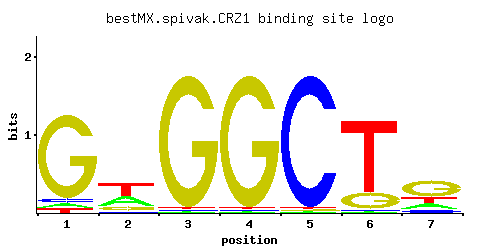

CRZ1
YNL027W, TCN1, HAL8
Transcription factor that activates transcription of genes involved in stress response; nuclear localization is positively regulated by calcineurin-mediated dephosphorylation
Best-performing DNA-binding model.

View and copy the recommended matrices ↘
A | 0.046 0.349 0.011 0.011 0.011 0.011 0.166 C | 0.046 0.041 0.011 0.011 0.967 0.011 0.096 G | 0.867 0.156 0.967 0.967 0.011 0.186 0.572 T | 0.041 0.454 0.011 0.011 0.011 0.792 0.166
A | 4 34 1 1 1 1 16 C | 4 4 1 1 96 1 9 G | 86 15 96 96 1 18 57 T | 4 45 1 1 1 79 16
A | -1.94 0.09 -3.37 -3.37 -3.37 -3.37 -0.66 C | -1.36 -1.48 -2.80 -2.80 1.68 -2.80 -0.63 G | 1.57 -0.14 1.68 1.68 -2.80 0.03 1.16 T | -2.05 0.35 -3.37 -3.37 -3.37 0.91 -0.66
Alternative candidate matrices 3
Historical matrix candidates from the original ScerTF database. Expand a source to inspect its original logo, scores, and matrix values.
CRZ1Badis et. al.P = 1.51e-07View matrix ↘
CRZ1Foat et. al.P = 0.3279View matrix ↘
CRZ1Macisaac et. alP = 2.32e-05View matrix ↘
Gene-level annotations and interactions.
Genes bound in ChIP-chip experiments 1 genes
No Data
Genes affected by TF deletion 67 genes
YMR016C, YJL053W, YBR005W, YGL166W, YMR009W, YOL014W, YOL016C, YOR220W, YPL016W, YHR053C, YHR055C, YBR287W, YLR120C, YMR314W, YMR316C-A, YMR316W, YBR093C, YBR129C, YDL002C, YER029C, YLR257W, YNL030W, YGL053W, YOR385W, YPL057C, YGL174W, YIL117C, YNL027W, YNL029C, YGR161C, YKL055C, YLR099C, YLR350W, YBL003C, YLR194C, YMR294W-A, YPL156C, YBR071W, YBR101C, YDL012C, YOR298C-A, YBR296C, YER035W, YML094W, YOR209C, YDR210W, YGR136W, YLR414C, YLR231C, YLR294C, YOL032W, YDR209C, YEL060C, YGR137W, YNL290W, YOR052C, YBR082C, YKL001C, YLL012W, YDL241W, YAL033W, YBR244W, YDR213W, YDR486C, YDL212W, YGR268C, YDR151C
Predicted TF–TF partners 2 genes
STP1, SUT1